Week agenda
Compact daily occurrences, cooked status and secondary actions.

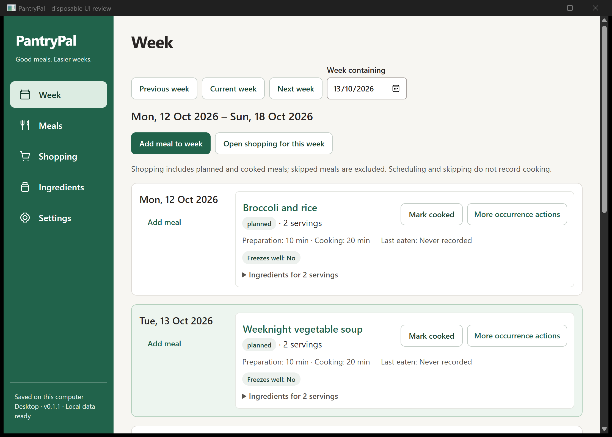
Actual screenshots of the redesigned Windows app using disposable sample data. Click any screenshot to inspect it at full resolution.
Approved proposals and full screen inventory · Changes, checks and review limits
The app uses local fonts and code-native icons. These captures include the development review window title; core usage stays offline.
Latest correction: aligned meal ingredient controls
Compact daily occurrences, cooked status and secondary actions.

Search and filter inside a native modal. Choosing a meal does not save it.
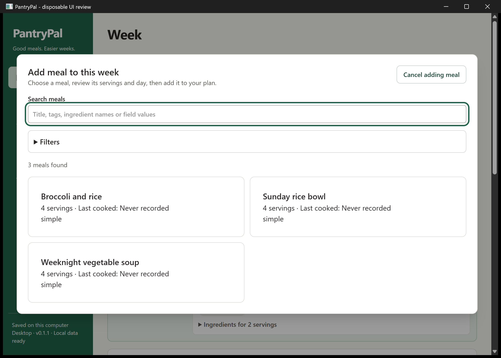
Review destination and text servings, then explicitly Add.
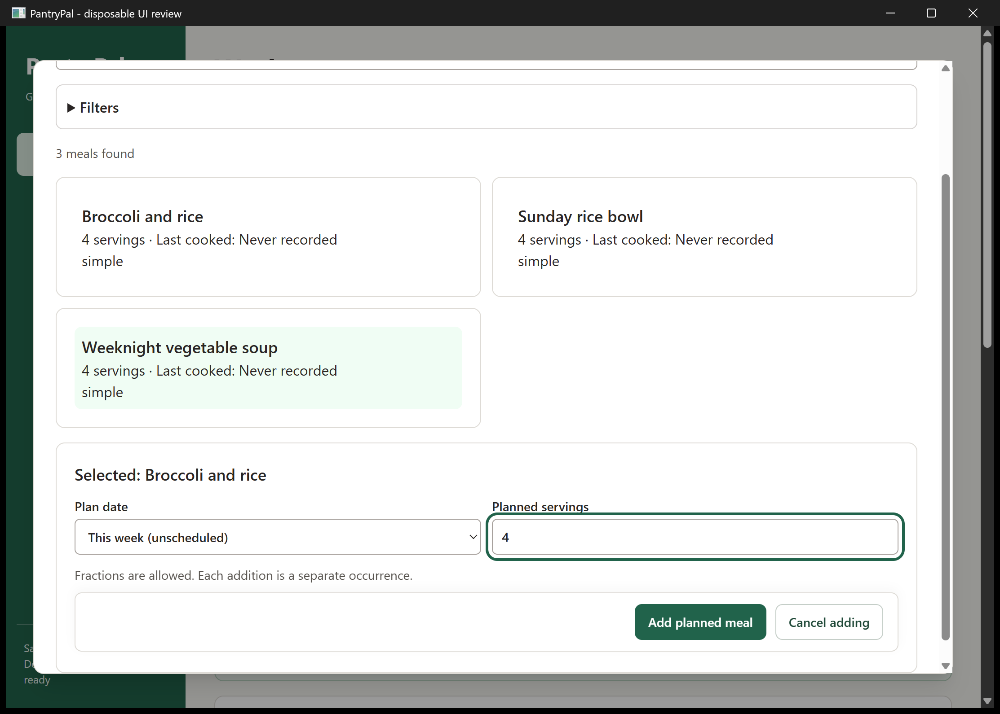
Prominent Import, readable cards and accurate active filters.
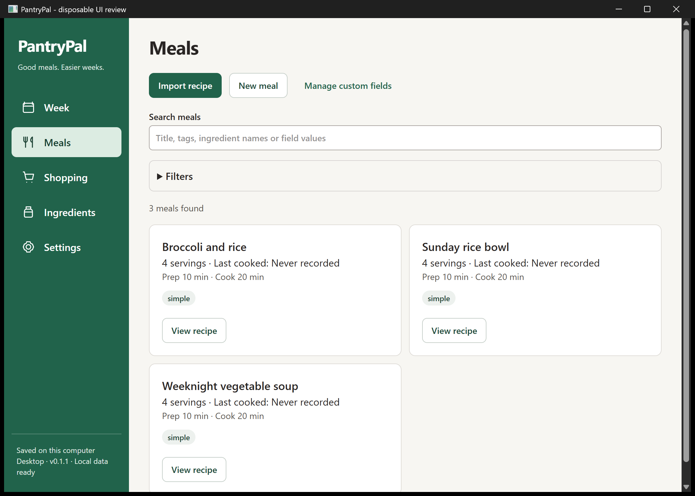
Ingredients beside instructions, with original wording and history available.
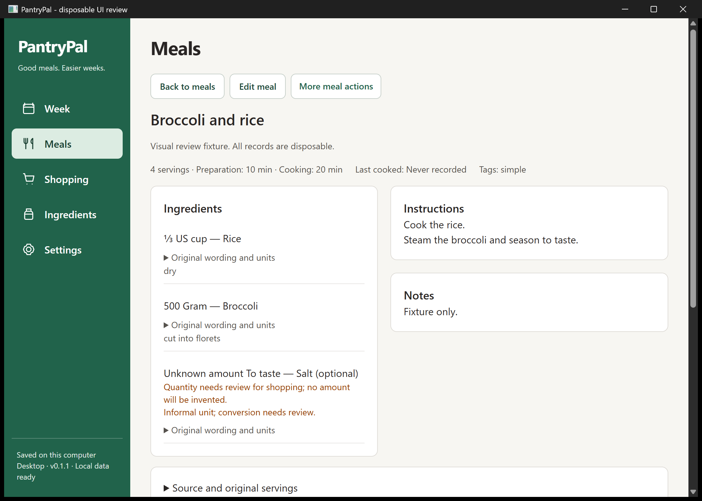
Grouped ingredient controls and a persistent Save/Cancel footer.
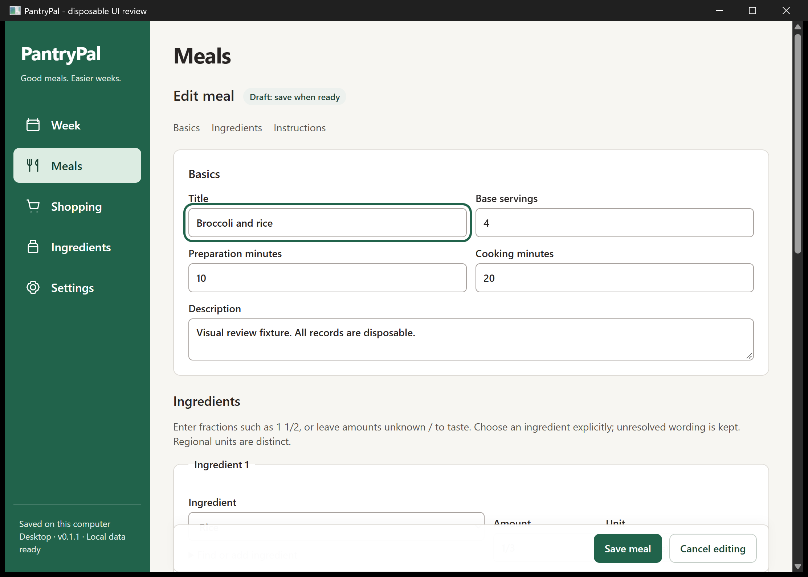
Aisle groups, quantities beside names and visible warnings.
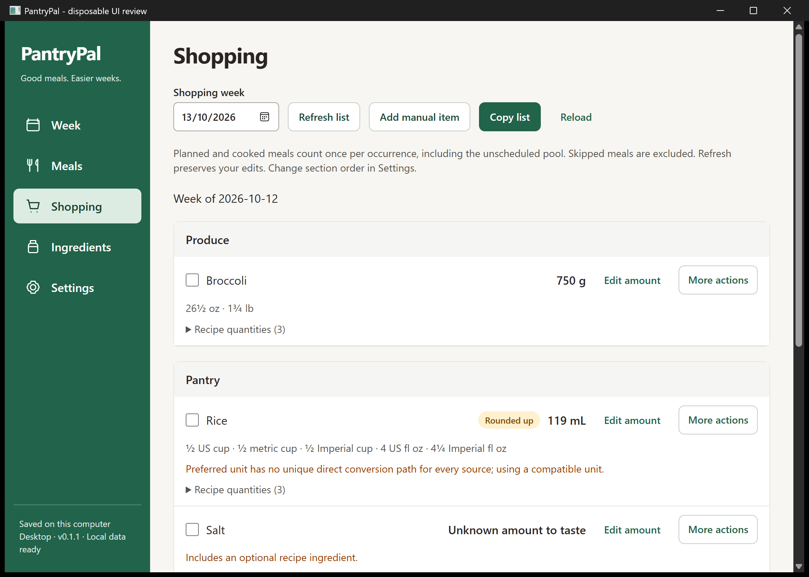
Aliases and preferred units remain visible in the catalogue.
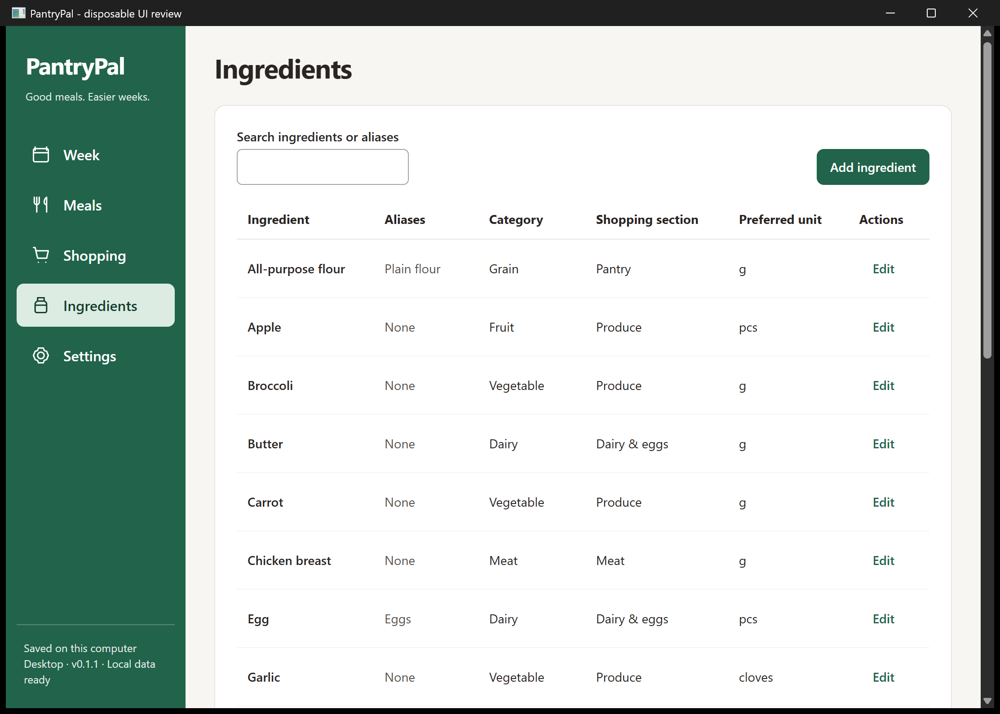
Typed definitions, understandable labels and historical-value protection.
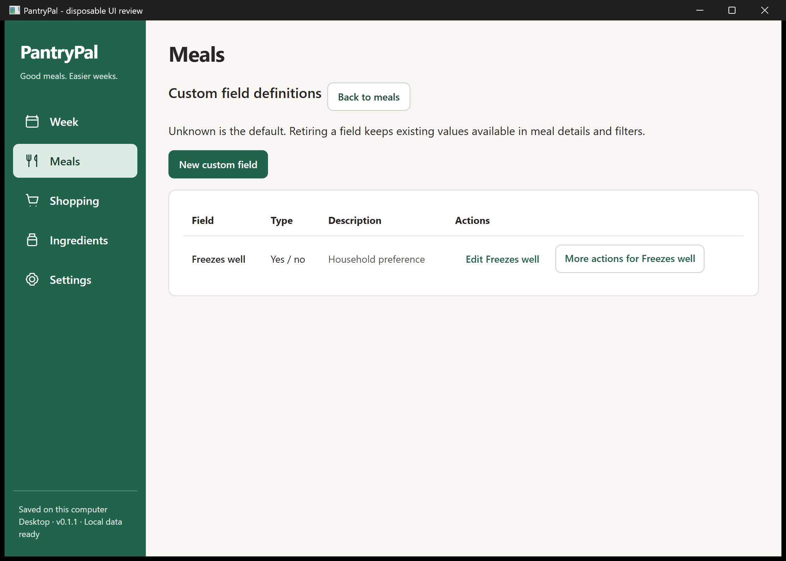
Explicit regional conventions and references from the unit catalogue.
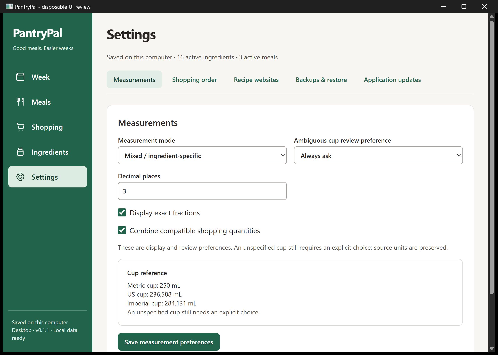
Export and staged review before a confirmed restore.
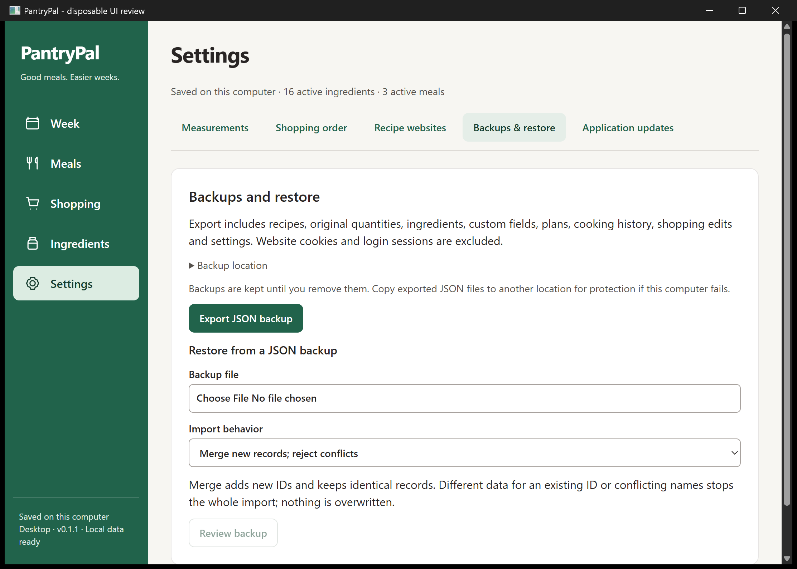
Source, Review and Save with permission and manual fallback.
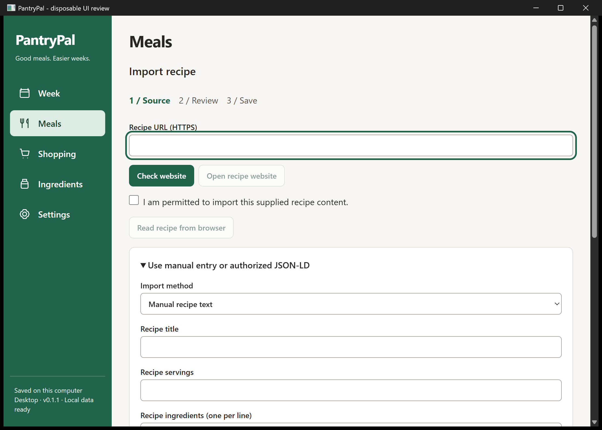
640 by 480 logical client area at Windows 200% scaling; navigation wraps and forms scroll.
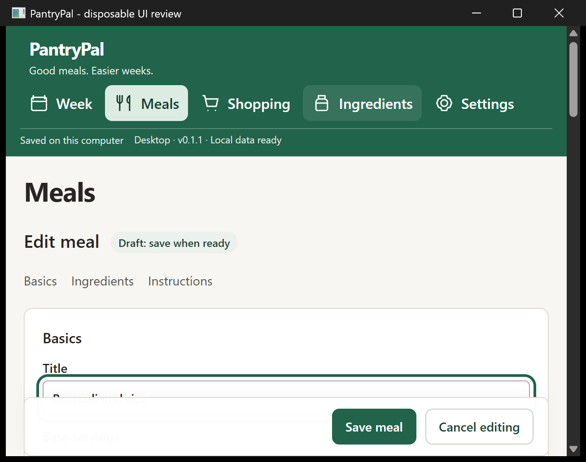